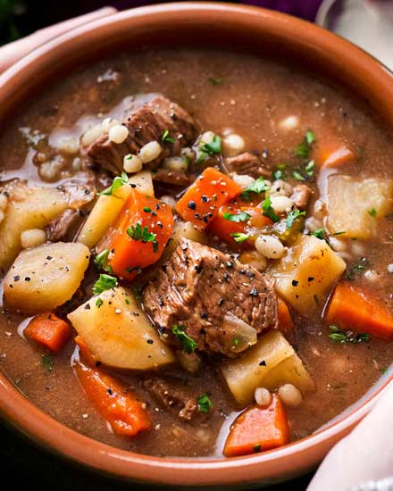

Cathy's Beef & Barley Soup
Yield
6 servings
Prep
30 min
Cook
3-4 hrs stovetop / 8 hrs slow cooker

My husband made this for dinner one night and I was so impressed! It's now a seasonal favourite. This soup has a flavourful broth that soaks right into the veggies and barley. The beef is deliciously tender and makes this an extra hearty meal. So comforting on a winter's day! Thank you Cathy!
Ingredients
- 4 lbs of stewing beef or a boneless beef pot roast
- 2 cloves of garlic
- 1 tsp dried thyme
- ¼ cup vegetable oil
- small can (156 ml) tomato paste
- 2 bay leaves
- 1 cup dry red wine
- 1 envelope Lipton's onion soup
- 3 cup water
- ½ cup pot barley
- ½ cup mustard (optional)
- Loosely chopped vegetables
Preparation
- Dry meat with paper towel. Heat oil over high heat. Add meat to oil and brown all sides. Remove to platter and set aside
- Reduce heat to medium and add tomato paste and bay leaves. Cook, stirring for 2 minutes. Add wine, onion soup mix, water, and mustard and scrape up any browned bits from the bottom of the pan. Mix.
- Add meat back to pan and add pot barley. Cover and simmer for 3-4 hours on the stove or 8 hrs in a slow cooker.
- During the last half hour add whatever vegetables you want (broccoli, potatoes, carrots, corn, etc.)